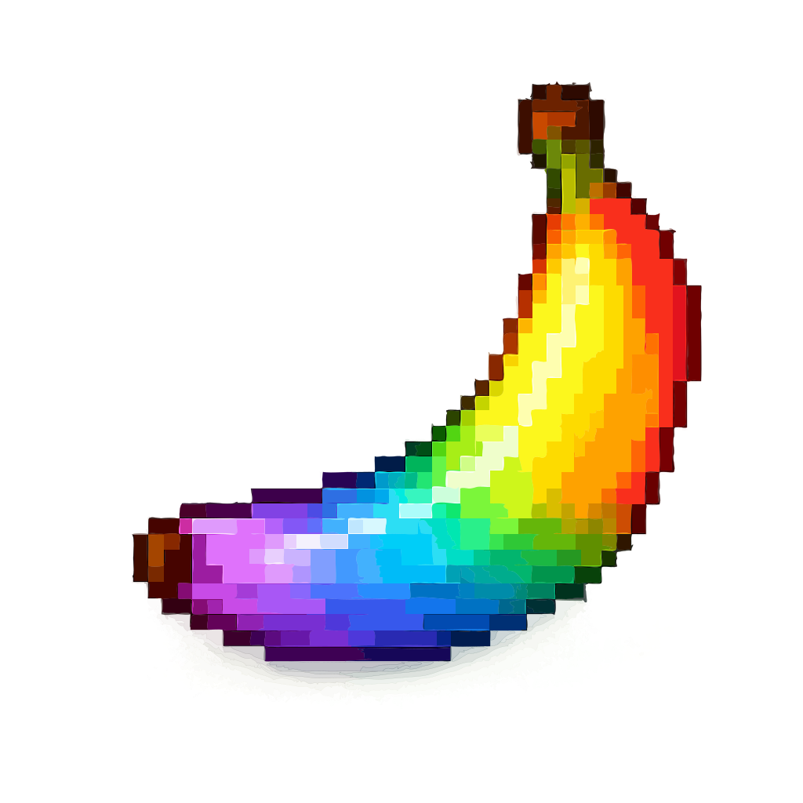
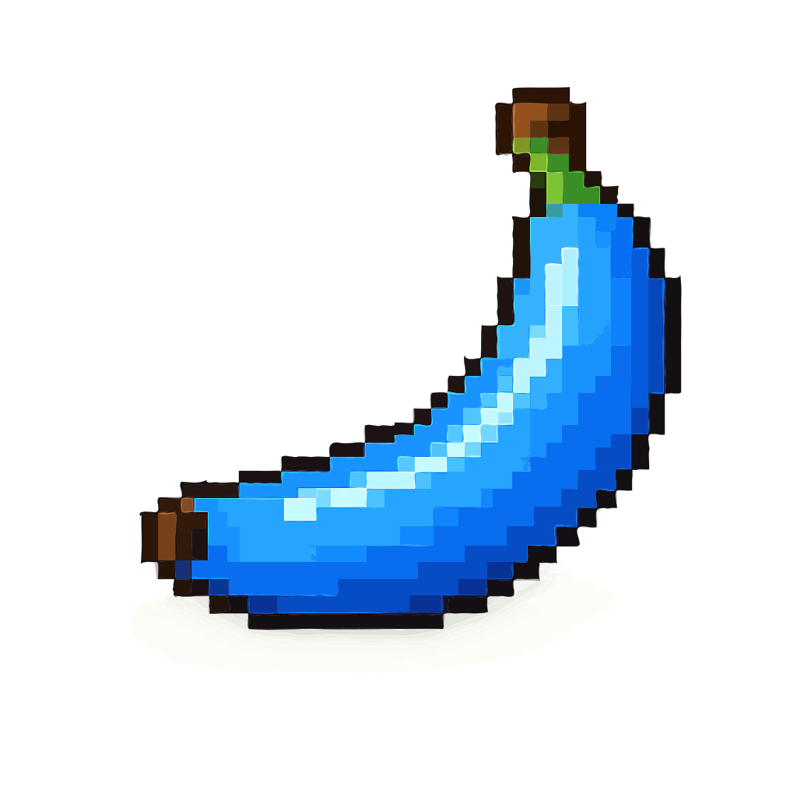
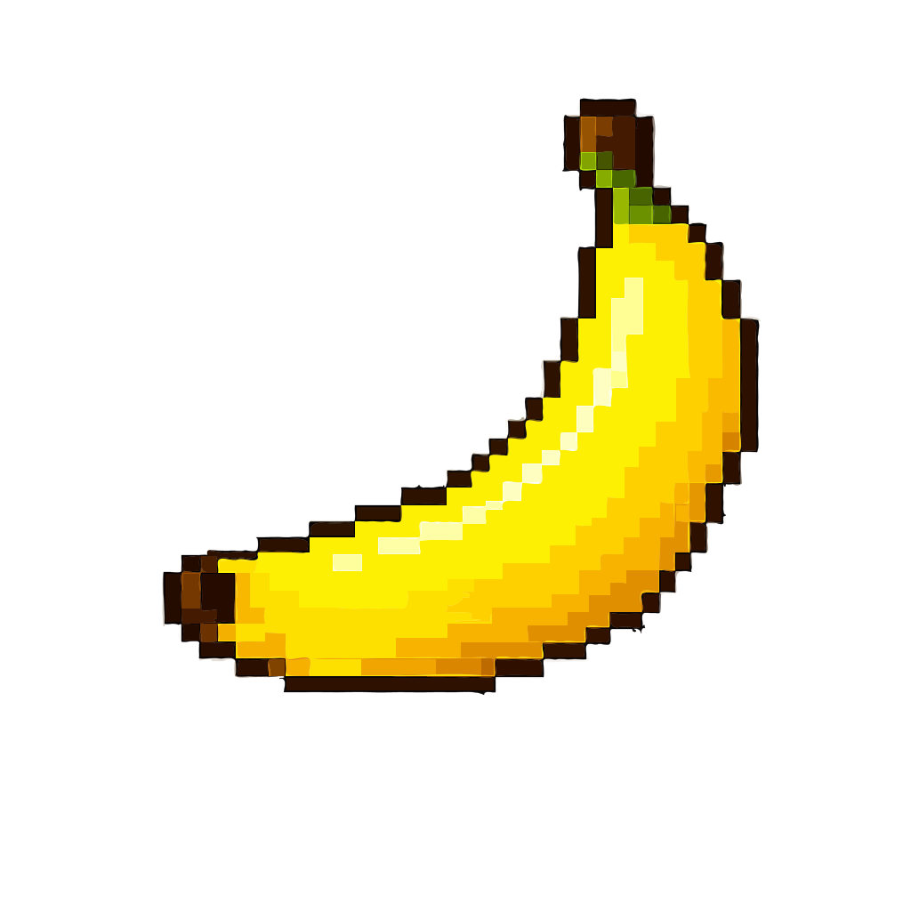
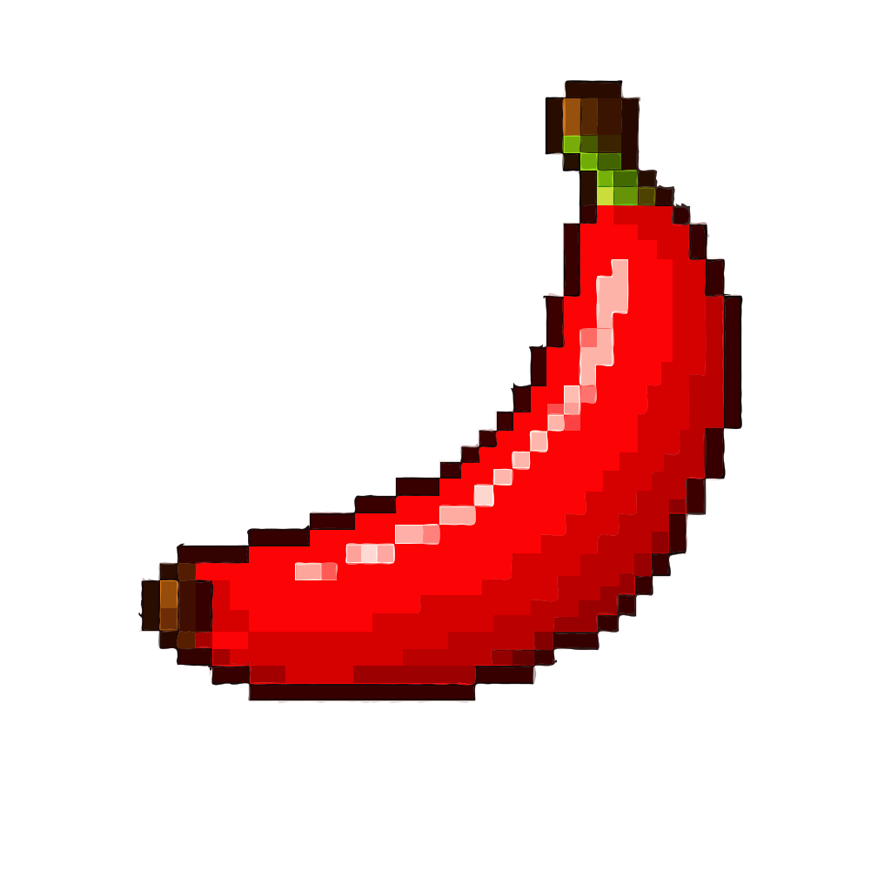

Быстрый перекус
Спелый банан дает мягкую сладость и помогает закрыть паузу между учебой, работой или прогулкой.
Tropical pixel mood
Солнечный клуб о сортах, пользе и маленьких фруктовых ритуалах. Кремовая легкость, зеленые акценты и настроение теплого острова.

K+ B6Факты и польза
Бананы легко брать с собой, добавлять в завтраки и использовать в десертах без лишнего сахара.
Спелый банан дает мягкую сладость и помогает закрыть паузу между учебой, работой или прогулкой.
Фрукт дружит с йогуртом, овсянкой, какао, арахисовой пастой и цитрусовыми нотами.
Желтая палитра визуально делает интерфейс теплее, легче и дружелюбнее для ежедневного просмотра.
Помимо привычного Cavendish есть красные, зеленые, мини-бананы и десертный Blue Java.
Популярные виды

Классический сладкий сорт для смузи, перекусов и бананового хлеба.

Насыщенный вкус с ягодной глубиной и теплым оранжевым оттенком мякоти.

Десертный сорт с кремовой текстурой, который часто сравнивают с мороженым.
Отзывы
"Сайт выглядит как солнечная открытка: быстро нашел сорта и вдохновился завтраком с бананом."
Подписка